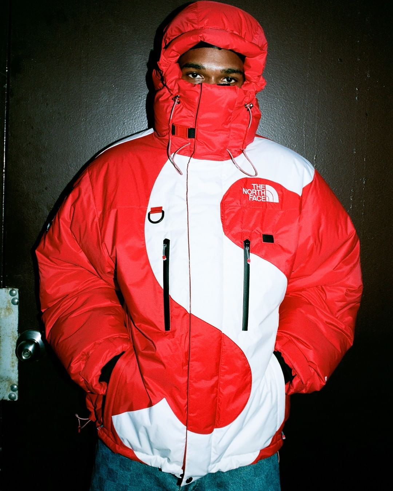
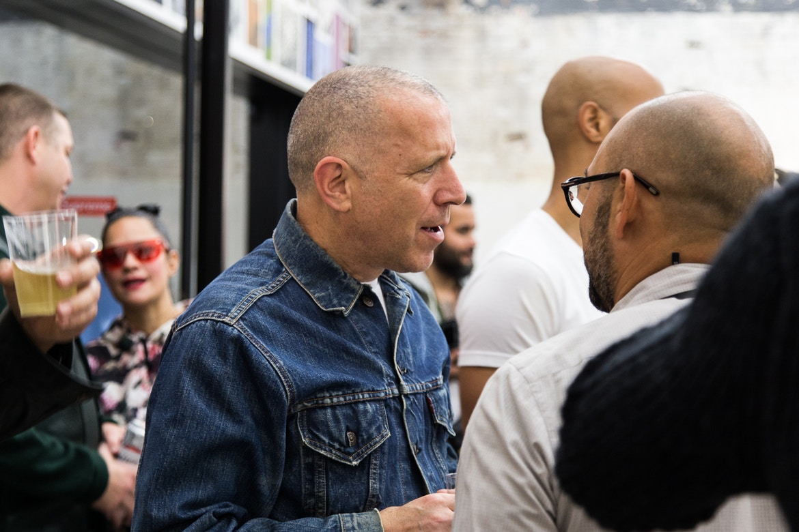
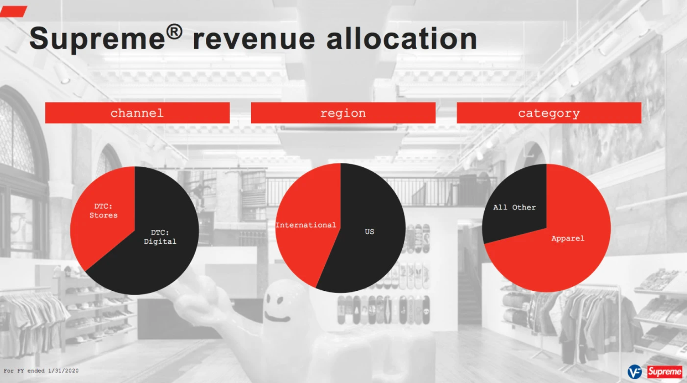
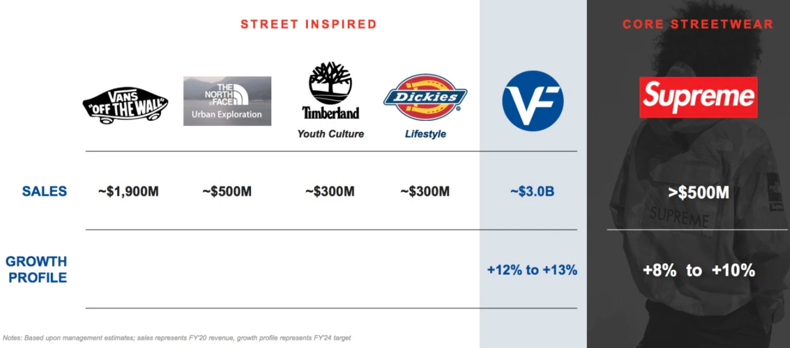
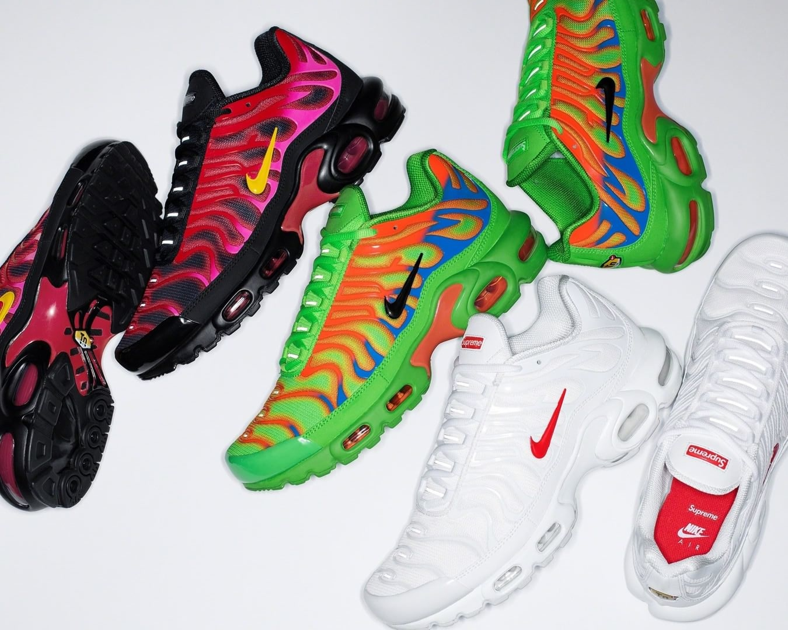
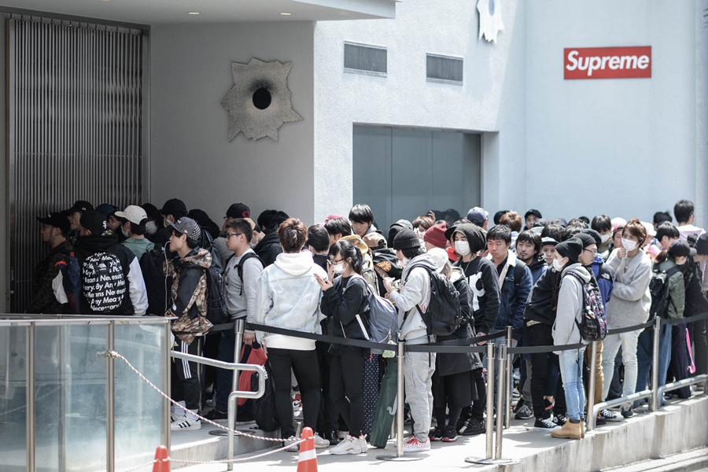
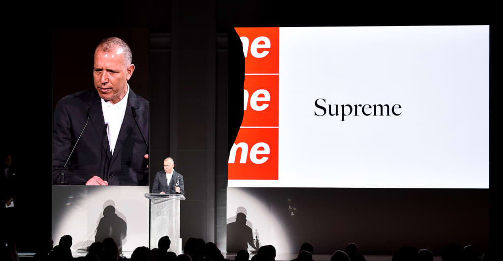
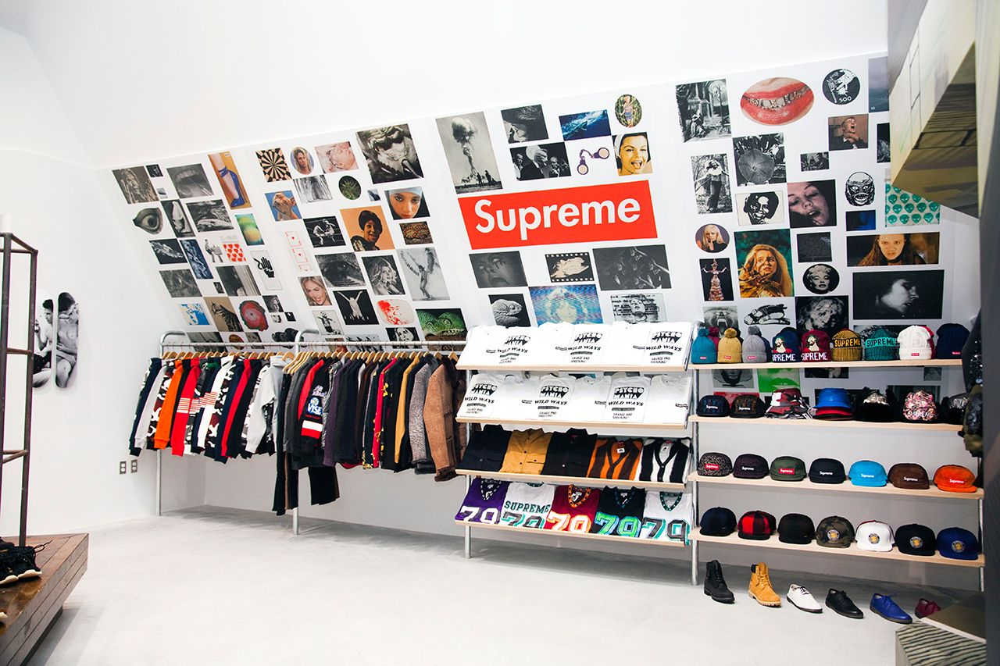

2020 年 11 月繼美國總統大選後的重磅消息 — 美國威富集團（VF Corp：The North Face、Vans、Timberland、Eastpak 母公司）11 月 9 日宣布，確定以 21 億美元收購 Supreme 100％ 股權，預計於 2020 財年結束前完成交易。
主理人 James Jebbia 等 Supreme 高階管理團隊將全數留任。

01. Supreme 目前的東家是誰？
威富收購前，Supreme 主要股份分別掌握在：凱雷集團 The Carlyle Group 和 Goode Partners LLC 手中，兩者皆為美國私募股權投資公司。
據《Bof》報導，2014 年 Goode Partners LLC 私下收購部分 Supreme 的股份，交易金額與持有股份等細節完全保密。據悉，Goode 的資金挹注後，不僅支持原有業務，更大力推動 Supreme 拓展電商、在巴黎和布魯克林設立新店舖。
2017 年 10 月，Supreme 以 5 億美元的價格出售 50% 股份給凱雷集團，這意味著 Supreme 當年市值達 11 億美元之多。（相較今年的交易額 21 億，整整翻了一倍）凱雷為全球最大的私人股權投資公司之一，相當擅長企業併購與投資，投資範圍涵蓋航太、零售、能源、醫療、電信等產業。
自從購入 Supreme 後，《Bof》便預言： 依凱雷的投資習性， 3 到 5 年就會把 Supreme 賣掉。果不其然，3 年一到，威富早已待命接手。

02. 現況：Supreme 還很賺，未來會更賺
據《Bof》報導，Supreme 目前全年銷售額超過 5 億美元，市值更在短短三年增長一倍。其「完全直營」（不經第三方寄售）的業務模式，造就零售服飾業中極佳的盈利能力，其毛利率高達 60%，營業利潤率超過 20％，意即 5 億美元營收中超過 1 億都由 Supreme 淨賺。
今年，即使部分店舖受 Covid-19 影響暫時關閉，但 Supreme 線上收入佔比高達 60%，因此業績仍維持個位數增長。
不要忘記，這 5 億年營業額只建立在 Supreme 全球 12 間店舖與自家電商，且貨量限量的情況下。
對此，威富集團高層在媒體視訊會議中揚言，未來將帶領 Supreme 創造年銷售額 10 億美元的紀錄。至於該如何增加營收？擴增店舖、增加發貨量還是進軍購物中心？我們接著看下去。

03. 威富能幫上 Supreme 什麼？
在會議中，威富集團說了很多「將善用集團市場分析數據輔助 Supreme」、「利用 VF 現有強大的國際市場版圖」、「提供更專業的數位資源」等類似的話，但其中對消費者最直接影響的一點是 —
威富將協助 Supreme 開發「鞋類」。
威富坐擁以戶外機能聞名的鞋類品牌 Timberland 和滑板鞋霸主 Vans，早已在鞋類開發深耕已久，反之，Supreme 過往多藉由聯名才會發布球鞋，相較於服飾、雜貨等品項，鞋類從未是 Supreme 的強項。威富董事長兼 CEO Steve Rendle 透露：「關於品項的對接，我們談得最多的就是鞋類。我認為最關鍵的，還是在於必須花時間真正了解 Supreme 認為最能代表自己的核心品項是什麼，以及我們能為此提供什麼幫助。」 未來，也許不是 Nike x Supreme 的聯名會減少，就是可期待一下 Supreme 開發的自家鞋款，又或者，將融合更多 The North Face 的高端機能材質。


04. 重點，未來中國該不會滿街都 Supreme 吧？
據財報分析，Supreme 絕大多數的銷售額還是由美國所貢獻，威富 CEO Steve Rendle 在視訊會議上直言：「Supreme 市場可以再更全球化。」
「中國是非常重要的一個機會。我想，當 Supreme 從紐約起家後，很早就對進軍日本市場有所準備，我們都很清楚，亞洲相較全球其他市場，有很強大的需求。」Steve Rendle 說道。
「跟我們合作，Supreme 能更加瞭解中國市場、如何與當地消費者建立最好的互動。雖說我們能把這些經驗分享給 Supreme，但最終決定權還是在他們自己手中，我們不是來強求他們做出改變…..而是來支持並幫助這項業務。」

話雖然講得客氣，但威富集團想增設 Supreme 門市的野心已表現得相當明顯，「目前（Supreme）有 12 間非常高效的實體店，若考量到地理版圖的擴張，絕對有增設店面的可能。加上強大的全通路零售和數位平台，這效益將會是目前實體店能做到的雙倍。」嗯，若真的照威富集團這種鋪天蓋地式的銷售策略走，Supreme 或許只會變成另一個很賺錢、很通俗、很常聯名的潮牌而已。
不過話說回來，你現在所擔心的「Supreme 失去獨立性」，James Jebbia 難道就沒想過嗎？
05. James Jebbia 的控制權還在嗎？
鑑於威富集團很欣賞 Supreme 目前「直接對準消費者」的直營模式，因此短期內銷售管道不太可能轉向「經銷」，也就不會有在購物中心或其他選貨店隨處看到 Supreme 的可能。那麼大家更在乎有沒有新直營門市？進不進駐日本以外的亞洲國家？

「如果在紐約之外的地方開店，就會損壞品牌聲譽，那我只能說作為品牌，我們還不夠強大。」— James Jebbia
挖出 2016 年 BoF 的專訪，James Jebbia 強調，他設立門市與商業目的無關，主要根據當地滑板與街頭文化底蘊。如 2016 年設立的巴黎店，剛開幕時也被潮流人士噓爆，James Jebbia 回應道：「瑪萊區（le Marais）是巴黎滑板的發源地。」他找來法國滑板公司 Minutia 創始人 Samir Krim 管理此店，「要是沒有 Krim 這樣的人，我們絕不會在巴黎開店。」
至於日本，無須贅言，是多數人認同潮流文化最深層的亞洲國家，身為 Supreme 元老之一 Aaron Bondaroff 也表示：「日本年輕人相當尊重地下文化的趨勢，他們眼光非常的好。」若哪天哪個亞洲國家的街頭文化發展能媲美日本，或許 Supreme 願意進駐也說不定？
對店址選擇與擴張非常謹慎的 James Jebbia，回顧過去被凱威集團控管的這 3 年，Supreme 也僅在美國多開設 3 間門市。未來增店擴點也是必然，但速率一定慢，至於會不會來到亞洲，實在難以妄下定論。
目前，雙方首要共識著重於全面強化「電商」與數位平台發展。

06. 什麼合作模式才會是雙贏？
BMO Capital Markets 的股票研究執行總監 Simeon Siegel 總結道：「最兩全其美的合作方法，就是 Supreme 維持自己現有的商業模式，並在 VF 集團汲取更多專業技能與營運資源（包括供應鏈、開發、數位資源）。」